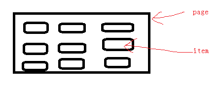
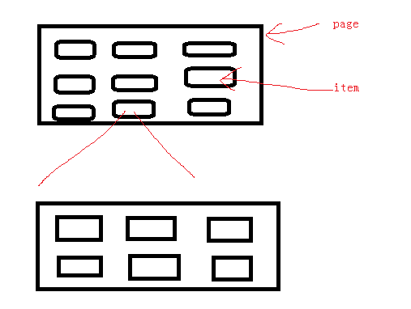
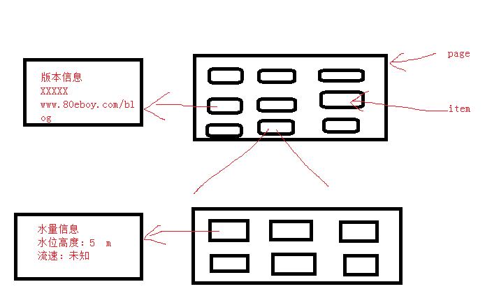

简单易用菜单框架
发布时间：2014-11-7编辑：80eboy转载请保留出处:http://www.80eboy.com/blog/menu_frame
相信很多攻城狮都用过128x64的液晶，想写好一点的ui好像不太可能或且花费很多时间，直接写吧，感觉好像很零碎，coding都怕了。下面介绍一个简单易用的菜单框架，你会发现它能做多层菜单而且结果清晰。
基本原理：

如上图液晶显示一屏我们定义为一个page，page中的项目定义为item；这样page就是item的容器了。当我们选中其中的一个item进去后是不是又是一个page呢，如下图。

这样的话每一个item的下面都对应一个page，这样是不是就构成一个多层的菜单了。

他们是什么关系呢？一个page中有item，那么用结构体就可以实现啦；item下面又有page，那么在item中加一个page的指针指向item对应的page页。前面都是从上到下的，那么怎么返回呢？观察发现返回就是子page返回父page，这样在page结构体中假如一项父page的指针不就ok了。具体实现请看源文件。
结构体定义
| #ifndef _Menu_H_BAB | |
| #define _Menu_H_BAB | |
| #include "stm32f10x.h" | |
| #include "LCD.h" | |
| #include "Key.h" | |
| #define KEY_Special 255 ///<这个保留用于特别事件 | |
| //菜单调试，在调试时最好定义，可以帮助发现问题；当发布时把其置为0可以加快速度 | |
| #define MENU_DEBUG 1 | |
| void Menu_Show(void); | |
| struct PAGE | |
| { | |
| const struct PAGE *pParent; | |
| void (*Function)(u8 key); | |
| const struct Item *pItem; | |
| const u8 ItemNum; | |
| }; | |
| struct Item | |
| { | |
| /** | |
| 高4位作为特殊用途（bit4=1表示列表显示否则两列显示），低4位用于标记Item的序号 \n | |
| 如果为列表模式时*pText的格式为：" xx.string",最前面保留一个空格用于个光标(>)使用，xx.为两位序号不要"."一定要有，string是要显示的文字，最多能显示6个汉字 \n | |
| 如果是两列显示则pText，即为要显示的文本（最多2个汉字） | |
| */ | |
| const u8 TypeAndIndex; | |
| const u8 *pText; | |
| const struct PAGE *pChildrenPage; | |
| }; | |
| extern const struct PAGE *pPage; | |
| void SetMainPage(const struct PAGE *pMainPage); | |
| void ShowMenu(const struct PAGE *pPage); | |
| void ShowPage(const struct PAGE *pPage); | |
| void ShowParentPage(void); | |
| void ShowItemPage(void); | |
| void SelPageItem(u8 ItemIndex); | |
| u8 Menu_GetSelItem(void); | |
| void GetShowLst(u8 *pOutMin,u8 *pOutMax); | |
| void KeySelItem(u8 key); | |
| #endif |
实现文件
| #include "MenuAPP.h" | |
| #include "I2C_eeprom.h" | |
| void mainPageCallBack(u8 key); | |
| void mainPage_Item1_CallBack(u8 key); | |
| extern const struct PAGE Version_Page; | |
| void Version_CallBack(u8 key); | |
| extern const struct PAGE Setting_Page; | |
| void Setting_CallBack(u8 key); | |
| extern const struct PAGE Time_Page; | |
| void Time_CallBack(u8 key); | |
| extern const struct PAGE SMS_Page; | |
| void SMS_CallBack(u8 key); | |
| extern const struct PAGE SMS_Text_Page; | |
| void SMS_Text_CallBack(u8 key); | |
| /******************************************************************************************************/ | |
| //主菜单 | |
| //定义Item项 //显示方式&序号 项目的名字 项目指向的页(Page) | |
| const struct Item main_item[]={ 0x00, "信息", &SMS_Page, | |
| 0x01, "设置", &Setting_Page, | |
| 0x02, "版本", &Version_Page, | |
| 0x03, "时间", &Time_Page, | |
| 0x04, "状态", 0, | |
| 0x05, "报警", 0, | |
| 0x06, "飞信", 0, | |
| 0x07, "问答", 0 | |
| }; | |
| //定义一个Page 父页 该页的回调函数 该页的项 项的个数 | |
| const struct PAGE mainPage={0,mainPageCallBack,main_item,sizeof(main_item)/sizeof(struct Item)}; | |
| /*********************************************************************************************************/ | |
| const struct PAGE Version_Page={&mainPage,Version_CallBack,0,0}; | |
| /***************************************************************************************************************/ | |
| //定义Item项 //显示方式&序号 项目的名字 项目指向的页(Page) | |
| const struct Item Setting_item[]={ 0x10, " 00.设0", 0, | |
| 0x11, " 01.设1", 0, | |
| 0x12, " 02.设2", 0, | |
| 0x13, " 03.设3", 0, | |
| 0x14, " 04.设4", 0, | |
| 0x15, " 05.设5", 0, | |
| 0x16, " 06.设6 你好", 0, | |
| 0x17, " 07.设7", 0, | |
| 0x18, " 08.设8", 0, | |
| 0x19, " 09.设9", 0, | |
| 0x1A, " 10.设10", 0 | |
| }; | |
| const struct PAGE Setting_Page={&mainPage,Setting_CallBack,Setting_item,sizeof(Setting_item)/sizeof(struct Item)}; | |
| /***************************************************************************************************************/ | |
| const struct PAGE Time_Page={&mainPage,Time_CallBack,0,0}; | |
| /***************************************************************************************************************/ | |
| //定义Item项 //显示方式&序号 项目的名字 项目指向的页(Page) | |
| const struct Item SMS_item[]={ | |
| 0x10, " 00.", &SMS_Text_Page, | |
| 0x11, " 01.", &SMS_Text_Page, | |
| 0x12, " 02.", &SMS_Text_Page, | |
| 0x13, " 03.", &SMS_Text_Page, | |
| 0x14, " 04.", &SMS_Text_Page, | |
| 0x15, " 05.", &SMS_Text_Page, | |
| 0x16, " 06.", &SMS_Text_Page, | |
| 0x17, " 07.", &SMS_Text_Page, | |
| 0x18, " 08.", &SMS_Text_Page, | |
| 0x19, " 09.", &SMS_Text_Page, | |
| 0x1A, " 10.", &SMS_Text_Page | |
| }; | |
| const struct PAGE SMS_Page={&mainPage,SMS_CallBack,SMS_item,sizeof(Setting_item)/sizeof(struct Item)}; | |
| //请计算出有多少项 | |
| #define THE_NUM_OF_SMS_ITEM 11 | |
| #if (THE_NUM_OF_SMS_ITEM>SMS_MAX) | |
| #error "the number of SMS item must not beyond than SMS EEPROM Item " | |
| #endif | |
| /***************************************************************************************************************/ | |
| const struct PAGE SMS_Text_Page={&SMS_Page,SMS_Text_CallBack,0,0}; | |
| /** | |
| 主菜单回调函数，对这个页得处理全部放在回调函数里 | |
| @param key 按键代码 | |
| */ | |
| void mainPageCallBack(u8 key) | |
| { | |
| switch (key) | |
| { | |
| case KEY_UP: | |
| case KEY_Down: | |
| case KEY_Left: | |
| case KEY_Right: | |
| KeySelItem(key); | |
| break; | |
| case KEY_Return:///<主菜单 对返回按键没有处理 | |
| ShowPage(&mainPage); | |
| break; | |
| case KEY_Ok: | |
| ShowItemPage(); | |
| break; | |
| } | |
| } | |
| void Version_CallBack(u8 key) | |
| { | |
| LCD_Write_Str(0,0,"版本信息"); | |
| LCD_Write_Str(1,0,"厂商：鲁东大学"); | |
| LCD_Write_Str(2,0,"地址：烟台"); | |
| LCD_Write_Str(3,0,"版本：V0.4"); | |
| if (key==KEY_Return) | |
| { | |
| ShowParentPage(); | |
| } | |
| } | |
| void Setting_CallBack(u8 key) | |
| { | |
| switch (key) | |
| { | |
| case KEY_UP: | |
| case KEY_Down: | |
| case KEY_Left: | |
| case KEY_Right: | |
| KeySelItem(key); | |
| break; | |
| case KEY_Return:///<主菜单 对返回按键没有处理 | |
| ShowParentPage(); | |
| break; | |
| case KEY_Ok: | |
| ShowItemPage(); | |
| break; | |
| } | |
| } | |
| void Time_CallBack(u8 key) | |
| { | |
| LCD_Write_Str(0,0,"日期: 2012-7-5"); | |
| LCD_Write_Str(1,0,"时间: 16:59"); | |
| if (key==KEY_Return) | |
| { | |
| ShowParentPage(); | |
| } | |
| } | |
| void SMS_CallBack(u8 key) | |
| { | |
| u8 i,tempData[SMS_TITLE_MAX_LEN]; | |
| u8 max,maxTemp; | |
| u8 min,minTemp; | |
| u8 SelIndex,SelIndexTemp; | |
| SelIndexTemp=Menu_GetSelItem(); //获得当前选中的index | |
| GetShowLst(&minTemp,&maxTemp); //获取当前显示的范围 | |
| switch (key) | |
| { | |
| case KEY_UP: | |
| case KEY_Down: | |
| case KEY_Left: | |
| case KEY_Right: | |
| KeySelItem(key); | |
| SelIndex=Menu_GetSelItem(); //获得当前选中的index | |
| GetShowLst(&min,&max); //获取当前显示的范围 | |
| if (max==maxTemp) break;//则表示当前显示的列表没有发生变化 | |
| for (i=min;i<=max;i++) | |
| { | |
| //读取SMS信息的title并显示 | |
| SMS_Read_Title(i,tempData,SMS_TITLE_MAX_LEN); | |
| LCD_Write_Str(i-min,2,tempData); | |
| } | |
| break; | |
| case KEY_Return:///<主菜单 对返回按键没有处理 | |
| ShowParentPage(); | |
| break; | |
| case KEY_Ok: | |
| ShowItemPage(); | |
| break; | |
| case KEY_Special://第一次进来时显示标题 | |
| for (i=0;i<4;i++) | |
| { | |
| SMS_Read_Title(i,tempData,SMS_TITLE_MAX_LEN); | |
| LCD_Write_Str(i,2,tempData); | |
| } | |
| break; | |
| } | |
| } | |
| void SMS_Text_CallBack(u8 key) | |
| { | |
| u8 SelItemIdex; | |
| u8 tempData[SMS_TEXT_MAX_LEN]; | |
| u8 len; | |
| static u8 offset=0; | |
| switch (key) | |
| { | |
| case KEY_Special: | |
| offset=0; | |
| SelItemIdex=Menu_GetSelItem(); | |
| SMS_Read_Text(SelItemIdex,offset,tempData,SMS_TEXT_MAX_LEN); ///<从EEPROM中读出信息文本 | |
| offset+=LCD_Write_Screen(tempData); | |
| break; | |
| case KEY_Left: | |
| if(offset<=64) break; ///<offset 少于等于64即当前是第一屏，按左键是没有意义的 | |
| offset=(offset/64-1)*64; | |
| SelItemIdex=Menu_GetSelItem(); | |
| SMS_Read_Text(SelItemIdex,offset,tempData,SMS_TEXT_MAX_LEN); ///<从EEPROM中读出信息文本 | |
| offset+=LCD_Write_Screen(tempData); | |
| break; | |
| case KEY_Right: | |
| if (offset%64) break; ///<假如offset不是64的整数说明当前液晶没有显示完，即没有数据了 | |
| SelItemIdex=Menu_GetSelItem(); | |
| SMS_Read_Text(SelItemIdex,offset,tempData,SMS_TEXT_MAX_LEN); ///<从EEPROM中读出信息文本 | |
| Lcd_Clr_Scr(); | |
| offset+=LCD_Write_Screen(tempData); | |
| break; | |
| case KEY_Return: | |
| ShowParentPage(); | |
| return; | |
| break; | |
| } | |
| } |
源文件下载：